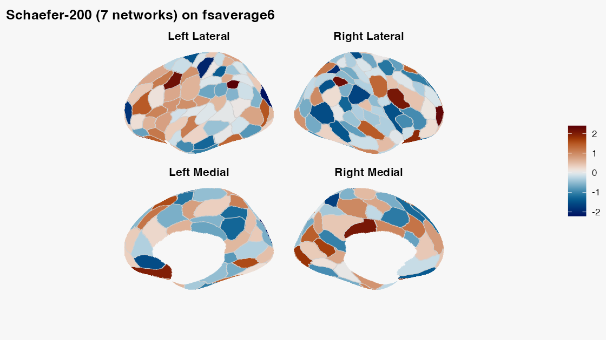

Surface Parcellations with neurosurf
Source:vignettes/surface-parcellations.Rmd
surface-parcellations.RmdA surface parcellation answers a simple-looking question: which
cortical parcel owns each mesh vertex? The answer involves three
aligned pieces: surface geometry, one integer label per vertex, and
region metadata. This article shows how neuroatlas keeps
those pieces together and how to attach one statistic per parcel without
changing the atlas.
The first surface-atlas call may download annotation files. For that reason, network-backed chunks are displayed but not run during package builds. Their outputs are real committed figures, generated from the code shown here.
What is a surface atlas?
schaefer_surf() returns a surfatlas. Its
two labelled surfaces share one region catalogue:
| Object | Contents | Cardinality |
|---|---|---|
atl$lh_atlas |
left geometry plus an integer label at every vertex | vertices |
atl$rh_atlas |
right geometry plus an integer label at every vertex | vertices |
atl$ids, atl$labels,
atl$hemi
|
region identity and metadata | parcels |
Load a 200-parcel Schaefer atlas on the bundled
fsaverage6 geometry like this:
library(neuroatlas)
atl <- schaefer_surf(
parcels = 200,
networks = 7,
space = "fsaverage6",
surf = "inflated"
)
class(atl)
class(atl$lh_atlas)The mesh geometry is bundled, while the Schaefer annotation is downloaded and cached on first use. Annotations supply the vertex labels; geometry alone is not a parcellation.
How do you verify geometry and labels?
A grey silhouette proves only that a mesh can be projected. A useful diagnostic checks topology, label length, and region coverage together:
lh_geometry <- neurosurf::geometry(atl$lh_atlas)
lh_labels <- as.integer(atl$lh_atlas@data)
diagnostic <- c(
vertices = nrow(neurosurf::vertices(lh_geometry)),
faces = ncol(lh_geometry@mesh$it),
vertex_labels = length(lh_labels),
labelled_regions = length(unique(lh_labels[lh_labels > 0]))
)
diagnostic
stopifnot(
diagnostic[["vertices"]] == diagnostic[["vertex_labels"]],
diagnostic[["faces"]] > 0,
diagnostic[["labelled_regions"]] == sum(atl$hemi == "left"),
all(unique(lh_labels[lh_labels > 0]) %in% atl$ids)
)The resulting parcellation should look like this, with visible parcel boundaries and more than one label colour:
plot_brain(
atl,
vals = seq(-2.5, 2.5, length.out = length(atl$ids)),
views = c("lateral", "medial"),
interactive = FALSE,
style = "ggseg_like",
colorbar = "right",
colorbar_title = "Example value",
title = "Schaefer-200 (7 networks) on fsaverage6"
)
How do you attach one value per parcel?
Keep the atlas and the results table conceptually separate. The
safest workflow joins a stable result key to atlas metadata; it does not
assume the rows already have atlas order. Here roi_index is
deliberately reversed:
parcel_results <- tibble::tibble(
roi_index = rev(atl$ids),
estimate = rev(seq(-2, 2, length.out = length(atl$ids)))
)
plot_brain(
atl,
data = parcel_results,
value = estimate,
by = c(id = "roi_index"),
views = c("lateral", "medial"),
interactive = FALSE,
style = "ggseg_like",
colorbar = "bottom",
colorbar_title = "Standardized effect"
)by = c(id = "roi_index") means “match atlas
id to result roi_index.” If both tables use
id, either write by = "id" or omit
by; the function safely infers it. Full atlas names in
label_full are another valid key. Short label
values can repeat across hemispheres or networks in Schaefer atlases, so
use a unique composite such as
by = c("label", "hemi", "network") when full names or IDs
are unavailable.
| Result-table key | by |
Assessment |
|---|---|---|
id |
omit, or "id"
|
Preferred: compact, stable, and unique |
roi_index |
c(id = "roi_index") |
Preferred when the ID column was renamed |
label_full |
omit, or "label_full"
|
Safe when the full atlas labels are preserved exactly |
label, hemi, network
|
c("label", "hemi", "network") |
Valid only when the combination is unique |
label alone |
"label" |
Usually unsafe for bilateral Schaefer atlases |
Alignment is strict by default. Duplicate result keys, unknown
parcels, and missing atlas parcels are errors. Use
allow_partial = TRUE only when absent parcels are
intentional; they are then shown as NA. You can inspect or
reuse the exact vector sent to the renderer:
parcel_values <- align_parcel_values(
atl,
parcel_results,
value = estimate,
by = c(id = "roi_index")
)
stopifnot(
identical(names(parcel_values), as.character(atl$ids)),
identical(unname(parcel_values), seq(-2, 2, length.out = length(atl$ids)))
)Passing vals = parcel_values remains useful for code
that already maintains atlas order, but a keyed table is safer at
analysis boundaries.
map_atlas() is the tabular companion to this plot. It
does not mutate the surface or return a labelled
mesh:
mapped <- map_atlas(atl, unname(parcel_values))
mapped
stopifnot(
nrow(mapped) == length(atl$ids),
identical(mapped$statistic, unname(parcel_values)),
identical(mapped$region, atl$labels),
identical(mapped$hemi, atl$hemi)
)Use the tibble for modelling and reporting; pass it directly to
plot_brain() for a surface figure.
How do you extract one surface ROI?
get_roi() selects vertices for one or more named regions
and returns neurosurf::ROISurface objects. Labels may occur
in both hemispheres, so make the side explicit when the question is
unilateral:
region_name <- atl$labels[atl$hemi == "left"][1]
roi <- get_roi(atl, label = region_name, hemi = "left")
stopifnot(
length(roi) == 1L,
methods::is(roi[[1]], "ROISurface"),
length(roi[[1]]) > 0L
)Atlas-level subsetting is currently volume-only.
filter_atlas(atl, ...) and sub_atlas(atl, ...)
fail clearly for a surface atlas; use get_roi() for surface
regions rather than expecting a smaller surfatlas.
How do you use per-vertex data?
Parcel values and vertex values are different data shapes. For an
already surface-aligned continuous field, supply one vector per
hemisphere through overlay:
vertex_values <- list(
lh = rep(0, nrow(neurosurf::vertices(
neurosurf::geometry(atl$lh_atlas)
))),
rh = rep(0, nrow(neurosurf::vertices(
neurosurf::geometry(atl$rh_atlas)
)))
)
plot_brain(
atl,
overlay = vertex_values,
interactive = FALSE,
style = "stat_publication",
colorbar = "bottom",
overlay_title = "Vertex statistic"
)A NeuroVol is not automatically aligned merely because
it can be sampled. The current plot_brain() volume
projection cannot infer template identity from a raw
NeuroVol, check compatibility, or consume a transformed
white/pial pair. Passing a volume is therefore unchecked caller
responsibility and is appropriate only when the volume already uses the
resolved surface coordinates. fsaverage,
fsaverage5, and fsaverage6 use MNI305
coordinates, whereas most modern MNI volumes use MNI152 coordinates; do
not project the latter directly.
transform_vertices_to_volume() is useful for
coordinate-level calculations, but it does not by itself create a
plot_brain() projection geometry. A grid reslice does not
establish correspondence.
What about other atlases and templates?
glasser_surf() has the same surfatlas
contract, but uses 164k fsaverage geometry and downloads
both geometry and annotations on first use. Raw geometry from
load_surface_template() has no atlas labels; the next
article explains that distinction in detail.
Continue with:
-
vignette("surface-panels")for shared legends and multi-map figures. -
vignette("surface-templates")for paths, geometry, and per-vertex data. -
vignette("working-with-templateflow")for live asset discovery.